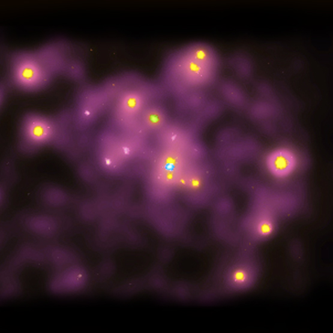

| Chandra
X-ray Observatory Center |
Harvard-Smithsonian
Center for Astrophysics 60 Garden St. Cambridge, MA 02138 USA http://chandra.harvard.edu |
 |
|
|||||
| Andromeda Galaxy (M31): Our nearest neighbor spiral galaxy at a distance of two million light years. (Credit: NASA/CXC/SAO) Caption:
This
X-ray image shows the central portion of the
Andromeda Galaxy. The blue
dot in the center of the image is a "cool" million
degree X-ray source
where a supermassive black hole with the mass of 30
million suns is
located.
The X-rays are produced by matter funneling toward
the black hole.
Numerous
other hotter X-ray sources are also apparent. Most
of these are
probably
due to X-ray binary systems, in which a neutron star
or black hole is
in
a close orbit around a normal star.
CXC operated for NASA by the Smithsonian Astrophysical Observatory |